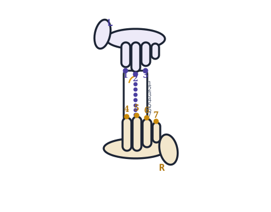

C5
all holes covered
Soprano recorder · Baroque fingering
Tap a note. The holes you need to cover light up on the instrument, and you hear the pitch. All 28 notes across the full range, transcribed from the American Recorder Society chart.

First octave — gentle, steady breath
Second octave — open, then pinch the thumb
Top register — advanced
All 28 fingerings were transcribed from the American Recorder Society's published soprano chart — Fingering Chart for Soprano (or Tenor) Recorder, Baroque (English) Fingering — and checked note-by-note against the Yamaha Musical Instrument Guide's Baroque soprano chart. The two sources agree on every note; where any doubt remained, we followed the ARS. The diagrams on this page were redrawn by us from scratch, not scanned from a printed chart.
One honest caveat about notation: publishers draw the thumb "pinch" differently. The ARS shows the thumb hole half-filled, Yamaha draws it a quarter open — both mean the same slight roll of the thumb, and this page follows the ARS style.
The chart is maintained by SKY AND WIND. If you spot something that looks wrong, use the report a fingering link under any note — we will verify it against the sources and update the chart when it is wrong.
Take it to the music room
Every fingering above, laid out for a single sheet of paper. Print it, hand it out, tape it to the stand.
Reading the diagram
The recorder has seven holes down the front and one thumb hole on the back. Your left hand always goes on top — the thumb covers the back hole, and your index, middle and ring fingers cover holes 1, 2 and 3. Your right hand covers holes 4, 5, 6 and 7 below.

Hold the instrument at roughly a 45° angle, with the mouthpiece resting on your bottom lip and your teeth off it entirely. Blow the way you'd blow through a cold straw: slow, warm and steady. Hard air makes the recorder shriek, which is where its reputation comes from.
Cover each hole with the soft pad of the finger, not the tip. A hole that's 95% covered gives you a squeak, not a note — if a low note won't speak, the cause is almost always a leak rather than your breath.
Positions 6 and 7 are usually two small holes side by side. Covering only the outer one of the pair lowers the note by a semitone, which is how you get C♯ and E♭ at the bottom of the range. On the diagram, a half-filled circle at 6 or 7 means outer hole only.
This is where most charts online get it wrong. C♯, D and E♭ above the first octave are played with the thumb hole fully open, using cross fingerings that look nothing like the notes an octave below. Pinching starts at E, and even then only some fingerings carry over. B and high C change again.
If you have been copying a chart that shows the second octave as the first octave with a pinched thumb, several of your notes are wrong.
Many teachers describe fingerings by number — low C is 0 1 2 3 4 5 6 7, G is 0 1 2 3. Naming the covered holes in order is faster than describing pictures, and it works on every size of recorder.
The soprano recorder sounds one octave above written pitch. This chart uses written note names, which is what your sheet music shows.
Two fingering systems
Recorders are built in two fingering systems, and they are not interchangeable. Most instruments carry a single letter stamped near the thumb hole: B for Baroque (also called English), G for German. Nearly all recorders sold today, and nearly all method books, are Baroque — the chart on this page is Baroque.
| Baroque / English | German | |
|---|---|---|
| Marking | B under the thumb hole | G under the thumb hole |
| Hole sizes | Small hole 4, large hole 5 | Large hole 4, small hole 5 |
| Low F | Fork fingering — hole 5 opens, but 6 and 7 close again 0 1 2 3 4 6 7 | In sequence — just lift one more finger off E, nothing below comes back down 0 1 2 3 4 |
| F♯ | Hole 4 opens and stays open 0 1 2 3 5 6 | The fork lands here instead — hole 4 opens, but 7 comes back down 0 1 2 3 5 6 7 |
| Sharps and flats | Simpler, and in tune across keys | Awkward — the fork fingerings move onto F♯ and the other accidentals instead |
| Moving to alto or tenor | Same fingerings carry over | Fingerings have to be relearned |
| Best for | Anyone who will keep playing | Very young beginners playing only in C major |
The two systems trade the same difficulty back and forth. German makes low F easy — you lift one finger off E and that is the whole story — but the awkward fork fingerings do not disappear, they simply move onto F♯ and the other accidentals. Baroque puts the fork on F and keeps everything above it tidy. That is why method books past the first year assume Baroque. See Baroque vs German fingering for a note-by-note comparison of the two systems.
A quick test: play the simple F fingering against a piano. If your recorder sounds sharp, it is a Baroque instrument and needs the fork. If it matches, it is German. Playing German fingerings on a Baroque recorder is the single most common reason a class sounds out of tune.
Common questions
B, A and G, in that order. B needs the thumb and one finger, A adds a second, G adds a third — so each new note is one more finger down. Almost every school method book starts here, because three notes are enough for real songs.
A leak. The low notes need every hole sealed perfectly, and the double holes at the bottom are the usual culprits — the little finger has to cover both small holes at position 7. Press with the flat pad of the finger, then look for a shiny ring on the skin; that ring tells you the seal was complete.
On a Baroque soprano, F♯ is 0 1 2 3 5 6 — thumb, the whole left hand, then skip hole 4 and cover 5 and 6. It is not simply "F with one less finger", which is the mistake most beginners make.
The finger patterns are identical, the resulting pitches are not. A soprano or tenor is a C instrument: all holes covered gives C. An alto or bass is an F instrument: the same fingering gives F. Use the instrument switch above the keypad to relabel the whole chart, or see the alto recorder fingering chart.
None — the tenor is a C instrument with the same finger patterns, an octave lower in pitch and a step larger in size. Everything on this chart transfers directly to the tenor recorder fingering chart.
Three causes, in order of likelihood. Too much air — the recorder needs far less breath than people expect, so blow like you are fogging a window, not blowing out a candle. A leaking hole, especially the thumb. Or moisture in the windway, which you clear by covering the window with your palm and blowing one sharp puff.
The pinch is the whole game. Roll your thumb back so the nail leaves a narrow crescent open at the back hole — not half the hole, a slit. Too wide and the note drops back down or screams. Add a little more air speed as you go up, but keep the pressure gentle; the thumb does the work, not your lungs.
Not to learn. A good moulded plastic soprano plays in tune, survives a school bag and can be washed. Wood matters for tone at an advanced level, and wooden instruments need careful breaking in.
Pull it apart and swab the bore dry after every session, then leave the pieces out to air rather than closing them straight into the case. If the sound goes breathy mid-lesson, moisture has collected in the windway — cover the window with your palm and blow sharply to clear it.
Corrections
Tell us and we will check it. Every fingering on this page was transcribed from the American Recorder Society's published soprano chart and checked note-by-note against the Yamaha Musical Instrument Guide, but transcription is done by humans and humans miss things.
Email hello@recorder-chart.com — or use the link under any note on the chart, which fills in the note name for you. We will verify your report against the published charts and update the page if it turns out to be wrong.
Sources: American Recorder Society, Fingering Chart for Soprano (or Tenor) Recorder, Baroque (English) Fingering, checked note-by-note against the Yamaha Musical Instrument Guide soprano recorder (Baroque) fingering chart. Diagrams on this page are drawn from scratch and are not reproductions.